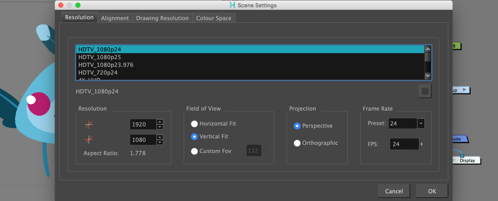
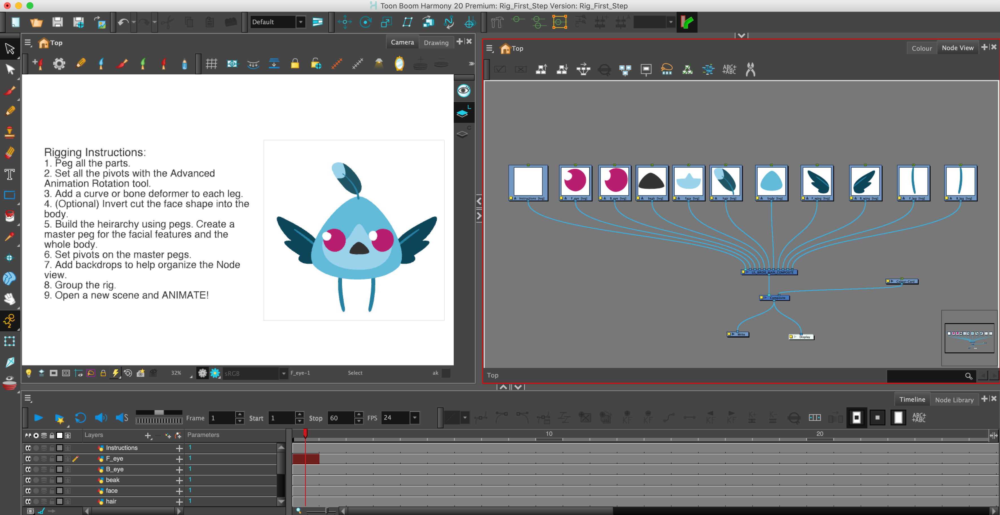
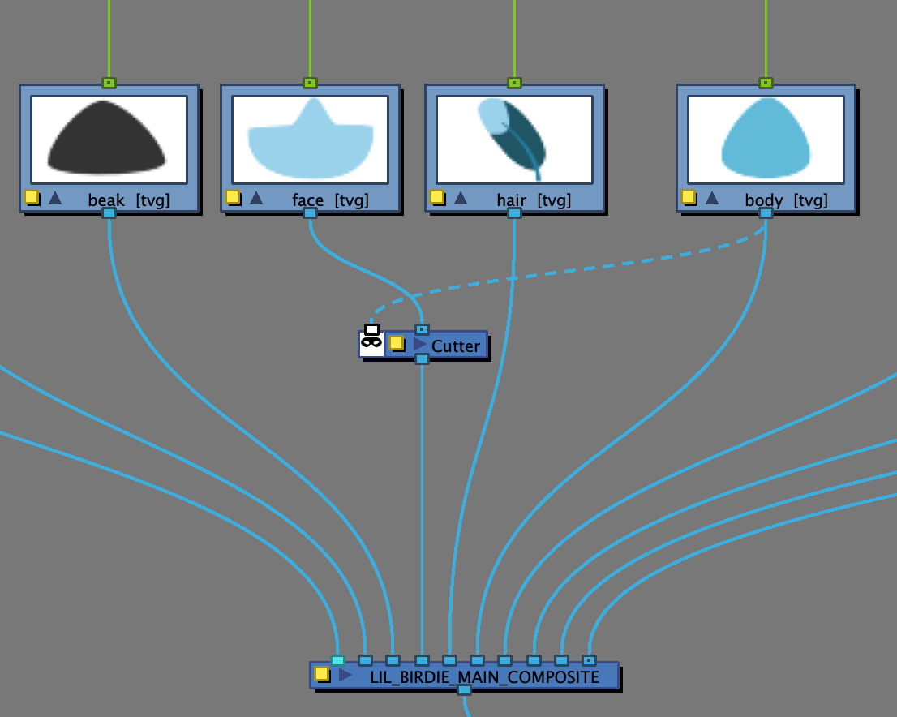

About this Lesson:
You will now apply the skills you learned in this course. Review your notes from all the previous lessons before beginning.
Lesson Duration: 8 hoursTask:
- Download the support files found in the Lesson Files.
- Download and review the assessment rubric found in the Lesson Files.
- Download the sound files found in the Lesson Files.
- Create your own animated flying bird scene in Harmony. Be sure to save and export your Harmony file as: YourName_Rig_First_Step.xstage in your Documents folder. Be sure to continue to take notes in your sketchbook/notebook on how to use Harmony and any animation terminology as it will help you prepare for your certification exam at the end of this course.
Part 1 - Setting up your file:
- Unzip this into your Documents folder on your computer.
- Open Rig_First_Step.xstage in your documents folder.
- Save as Open FirstName_Last Name_Rig_First_Step.xstage in your documents folder.
- Change Scene Settings to to: HDTV_1080p24

- Change the Scene Length to 72.
- Delete the instructions layer.

Part 2 - Peg all the parts:
- Begin by adding pegs to all Drawing layers in the Node view.
- Set all the pivots on pegs.
- Add a curve or bone deformer to each leg.
- Build the hierarchy using pegs. Create a master peg for the facial features and the whole body.
- Set pivots on the master pegs.
- Add backdrops to help organize the Node view.
- Group the rig.
- Apply a Cutter Node matte to the body so the eyes layer does not overlap the body art.

- Colour your layers in the Timeline and Node view as follows:
- Blue - Body, Eyes, beak, face, hair
- Red - Wings
- Green - legs